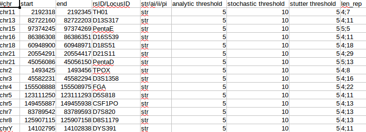

The process of filtering SNP/STR calls by locus is usually done within the pipeline by intersecting the calls with BED files listing the separate "panels" of chosen loci. An attempt has been made to provide a single standardised file format with all the information that is required for this step, to include both SNP and STR loci. This file format has been named .pnl (panel) and an example is shown below:
The panel file format is closely modelled on the standard BED file format in that the first three columns are the same, allowing for standard tools such as BEDtools to work with these files, e.g. to intersect results with a panel file.
The columns that define a panel file are as follows:
Note: currently only VCF files produced by Mpileup and Freebayes are filtered by the "standard.pnl" panel file as LobSTR and STRait Razor require some extra work to accommodate the extra information present in their VCF files. To provide custom STR loci, the lobSTR_codis_hg19.bed and lobSTR_ystr_hg19.bed files need to be replace or modified with the new loci.